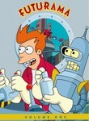
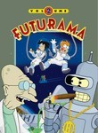
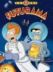
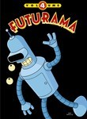
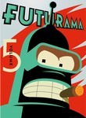

Futurama
Stephen Klancher
...has seen 124
...has seen 2.1 hours
...has not seen 0.2 hours

Timeline
Most Recent:
Meanwhile
First Unseen:
Bender's Big Score: Part 1 (# 73)
...has seen 124
...has seen 2.1 hours
...has not seen 0.2 hours
Timeline
Most Recent:
Meanwhile
First Unseen:
Bender's Big Score: Part 1 (# 73)






Stephen Klancher: December 15, 2008 
Several times Fry was hilarious just because of sentence structure.
Stephen Klancher: September 19, 2008
So ends the series for Bob. I only watched occasionally with him, though I've seen many of the episodes already.
This is a pretty solid ending to a great series. Glad to see a series that actually does some emotional wrap up with the characters.
Also amused by the intro text which said "See you on another channel."
This is a pretty solid ending to a great series. Glad to see a series that actually does some emotional wrap up with the characters.
Also amused by the intro text which said "See you on another channel."

Stephen Klancher: March 21, 2011
Add Fry and Leela to the list with John/Aeryn and Peter/Olivia. They all need attend the "Relationship issues caused by Twin/Clone/Alternate/Robot-Double"-Workshop.
Stephen Klancher: March 22, 2011
Let's see how crazy I am now Nixon! ...The correct answer is "Very."